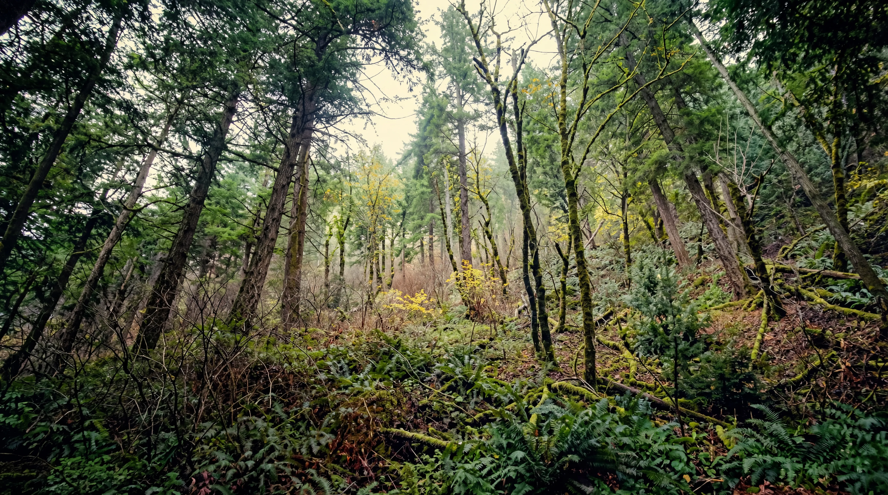

Overview
The forest ecosystem is a complex and diverse system that provides a range of benefits to human society. Forests are home to a wide range of plant and animal species, as well as providing important resources such as wood, food, and medicine.
Types of Forests
There are many different types of forests around the world, each with their own unique characteristics. Some common types of forests include:
- Tropical rainforest
- Boreal forest
- Temperate forest
- Montane forest
- Mangrove forest
Flora
Forest ecosystems are dominated by trees of various sizes and species, including deciduous, coniferous, and tropical varieties. The understory contains shrubs, ferns, and herbaceous plants that thrive in the shaded forest environment. These plants play a crucial role in the forest food web and nutrient cycling.
Fauna
Forests support an incredible diversity of wildlife, from large mammals like deer, bears, and wolves to smaller creatures like squirrels, rabbits, and numerous bird species. Insects, amphibians, and reptiles also inhabit forest ecosystems, playing vital roles in pollination, decomposition, and pest control. Each layer of the forest supports different animal communities.
Benefits of Forest
Forests provide a range of benefits to human society, including:
- Wood and other forest products
- Clean air and water
- Climate regulation
- Biodiversity
- Recreational opportunities
Threats to Forest
Forests around the world are under threat from a range of factors, including:
- Deforestation
- Climate change
- Invasive species
- Wildfires
- Illegal logging
Conservation of Forest
To protect and preserve forest ecosystems, it is essential to take conservation measures. Some common conservation strategies include:
- Protected areas
- Sustainable forestry practices
- Reforestation and afforestation
- Community-based conservation
- Education and awareness
Importance of the Forest Ecosystem
Forests are essential for life on Earth, producing the oxygen we breathe and storing massive amounts of carbon, helping regulate our climate. They provide critical habitat for millions of species, support human livelihoods through timber and non-timber products, and play a vital role in water filtration and soil conservation.
Fun Facts about the Forest Ecosystem
- Forests cover approximately 30% of the Earth's land surface and contain about 80% of all terrestrial species.
- A mature forest can produce enough oxygen for 18 people per year.
- Some tree species can live for thousands of years, making them among the oldest living organisms on Earth.
Conclusion
Forest ecosystems are vital to the health of our planet, providing essential services and supporting incredible biodiversity. By understanding the importance of forests and taking steps to protect them, we can help ensure that these ecosystems continue to thrive for generations to come.